library(tidyverse)
read_file = readLines("data/county_health_2021.csv")
county_health_2021 <- read.csv(textConnection(read_file[-2]), header = TRUE, sep=",")
rm(read_file)
county_health_2021 <-
county_health_2021 |>
rename_all(~str_replace_all(.,"\\.","_")) |>
rename_all(~str_replace_all(.,"___","_")) |>
filter(State_FIPS_Code != 00 & County_FIPS_Code != 0) |>
select(State_FIPS_Code:Release_Year, ends_with("value"), -starts_with("X"))
ne_county_health_2021 <- county_health_2021 |>
filter(State_Abbreviation %in% c("MA", "RI", "CT", "VT", "NH", "ME"))SDS192 Lab 2
Today’s Dataset
Today we will be working with a data resource from the University of Wisconsin Population Health Institute. It aggregates data from a number of government sources to produce county health indicators for every county in the US. Something to keep in mind when reviewing this data:
*While this is a powerful data source for visualizing health disparities, particularly in smaller counties, there can be large degrees of uncertainty in the reporting of certain health measures. We won’t be working with this dataset’s confidence intervals today, so we do want to consider that the visualizations that we see are not a perfect reflection of county health.
Run the code below to load the dataset we will be working with today.
View the Data
# Write your code below
glimpse(ne_county_health_2021)Rows: 67
Columns: 73
$ State_FIPS_Code <int> 9, 9, 9, 9…
$ County_FIPS_Code <int> 1, 3, 5, 7…
$ State_Abbreviation <chr> "CT", "CT"…
$ Name <chr> "Fairfield…
$ Release_Year <int> 2021, 2021…
$ Premature_death_raw_value <dbl> 4441.607, …
$ Poor_or_fair_health_raw_value <dbl> 0.1191672,…
$ Poor_physical_health_days_raw_value <dbl> 3.204779, …
$ Poor_mental_health_days_raw_value <dbl> 3.563896, …
$ Low_birthweight_raw_value <dbl> 0.07542261…
$ Adult_smoking_raw_value <dbl> 0.1167712,…
$ Adult_obesity_raw_value <dbl> 0.212, 0.2…
$ Food_environment_index_raw_value <dbl> 8.6, 8.2, …
$ Physical_inactivity_raw_value <dbl> 0.173, 0.2…
$ Access_to_exercise_opportunities_raw_value <dbl> 0.9681075,…
$ Excessive_drinking_raw_value <dbl> 0.2179941,…
$ Alcohol_impaired_driving_deaths_raw_value <dbl> 0.3168724,…
$ Sexually_transmitted_infections_raw_value <dbl> 368.7, 542…
$ Teen_births_raw_value <dbl> 8.191001, …
$ Uninsured_raw_value <dbl> 0.08265020…
$ Primary_care_physicians_raw_value <dbl> 0.00093131…
$ Dentists_raw_value <dbl> 0.00095300…
$ Mental_health_providers_raw_value <dbl> 0.00316961…
$ Preventable_hospital_stays_raw_value <int> 3819, 4201…
$ Mammography_screening_raw_value <dbl> 0.48, 0.48…
$ Flu_vaccinations_raw_value <dbl> 0.55, 0.56…
$ High_school_completion_raw_value <dbl> 0.9002075,…
$ Some_college_raw_value <dbl> 0.7123991,…
$ Unemployment_raw_value <dbl> 0.03633090…
$ Children_in_poverty_raw_value <dbl> 0.118, 0.1…
$ Income_inequality_raw_value <dbl> 5.795649, …
$ Children_in_single_parent_households_raw_value <dbl> 0.2049951,…
$ Social_associations_raw_value <dbl> 9.450925, …
$ Violent_crime_raw_value <dbl> 238.13702,…
$ Injury_deaths_raw_value <dbl> 53.58080, …
$ Air_pollution_particulate_matter_raw_value <dbl> 9.5, 7.4, …
$ Drinking_water_violations_raw_value <dbl> 1, 1, 1, 1…
$ Severe_housing_problems_raw_value <dbl> 0.2126866,…
$ Driving_alone_to_work_raw_value <dbl> 0.7220102,…
$ Long_commute_driving_alone_raw_value <dbl> 0.364, 0.2…
$ Life_expectancy_raw_value <dbl> 82.98309, …
$ Premature_age_adjusted_mortality_raw_value <dbl> 216.2291, …
$ Child_mortality_raw_value <dbl> 28.91347, …
$ Infant_mortality_raw_value <dbl> 4.007788, …
$ Frequent_physical_distress_raw_value <dbl> 0.09786571…
$ Frequent_mental_distress_raw_value <dbl> 0.1078141,…
$ Diabetes_prevalence_raw_value <dbl> 0.073, 0.1…
$ HIV_prevalence_raw_value <dbl> 333.1, 417…
$ Food_insecurity_raw_value <dbl> 0.099, 0.1…
$ Limited_access_to_healthy_foods_raw_value <dbl> 0.03208319…
$ Drug_overdose_deaths_raw_value <dbl> 19.42140, …
$ Motor_vehicle_crash_deaths_raw_value <dbl> 5.714590, …
$ Insufficient_sleep_raw_value <dbl> 0.3307787,…
$ Uninsured_adults_raw_value <dbl> 0.09986454…
$ Uninsured_children_raw_value <dbl> 0.03694440…
$ Other_primary_care_providers_raw_value <dbl> 0.00112897…
$ High_school_graduation_raw_value <dbl> 0.9021986,…
$ Disconnected_youth_raw_value <dbl> 0.03976067…
$ Reading_scores_raw_value <dbl> 3.290689, …
$ Math_scores_raw_value <dbl> 3.143734, …
$ Median_household_income_raw_value <int> 96966, 753…
$ Children_eligible_for_free_or_reduced_price_lunch_raw_value <dbl> 0.3801547,…
$ Residential_segregation_Black_White_raw_value <dbl> 59.76716, …
$ Residential_segregation_non_White_White_raw_value <dbl> 47.73139, …
$ Homicides_raw_value <dbl> 2.297930, …
$ Suicides_raw_value <dbl> 7.975771, …
$ Firearm_fatalities_raw_value <dbl> 3.848345, …
$ Juvenile_arrests_raw_value <dbl> NA, NA, NA…
$ Traffic_volume_raw_value <dbl> 895.98872,…
$ Homeownership_raw_value <dbl> 0.6705420,…
$ Severe_housing_cost_burden_raw_value <dbl> 0.19190530…
$ Broadband_access_raw_value <dbl> 0.8853872,…
$ Population_raw_value <int> 943332, 89…Overplotting
When we have so much overlapping data represented on a plot that it becomes difficult to draw any conclusions from it. Run the code below to see an example of this.
ggplot(data = county_health_2021,
aes(x = Children_in_poverty_raw_value,
y = Math_scores_raw_value,
color = Broadband_access_raw_value)) +
geom_point() +
labs(title = "Health Measures in the US, 2021",
x = "Children in Poverty Measure",
y = "Math Scores Measure",
color = "Broadband Access Measure") +
theme_minimal() +
theme(legend.position = "bottom") +
scale_color_distiller(palette = "Greens")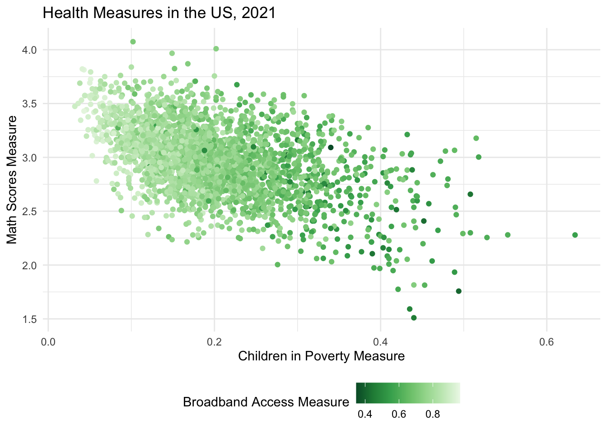
Fortunately, there are some adjustments we can make to deal with overplotting. First, we can adjust the transparency of the shapes on our plot by setting the alpha argument in our geom function to a number between 0 and 1. We can also reduce the size of the shapes on our plot by setting the size argument in our geom function to a number between 0 and 1.
Exercise 1: Adjust the Alpha and Size of Points on Plot
Copy and paste the code I created above into the chunk below. In the geom_point() function, set the alpha to 0.75 and the size to 0.5. Notice the adjustments to the plot as you update these attributes.
# Paste the code below and adjust it
ggplot(data = county_health_2021,
aes(x = Children_in_poverty_raw_value,
y = Math_scores_raw_value,
color = Broadband_access_raw_value)) +
geom_point(alpha = 75/100, size = 50/100) +
labs(title = "Health Measures in the US, 2021",
x = "Children in Poverty Measure",
y = "Math Scores Measure",
color = "Broadband Access Measure") +
theme_minimal() +
theme(legend.position = "bottom") +
scale_color_distiller(palette = "Greens")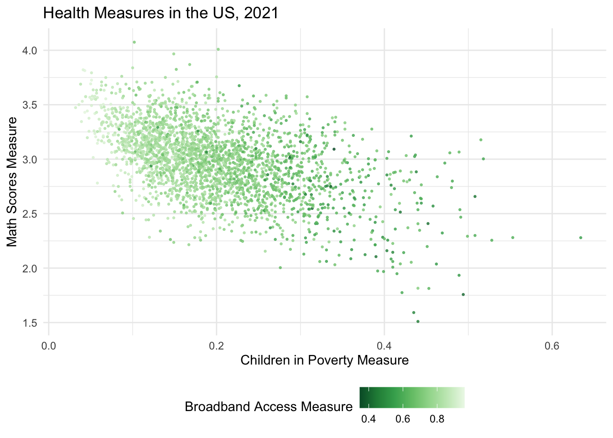
Reflection: What conclusions would you draw from this plot?
Answer:
This scatter plot has a negative trend. This means that in 2021, US children who had lower math scores tend to be more likely in poverty.
Let’s look at another example of overplotting. Run the code below and review the plot.
ggplot(data = ne_county_health_2021,
aes(x = State_Abbreviation,
y = Flu_vaccinations_raw_value)) +
geom_point() +
labs(title = "Flu Vaccination Measure by County, New England, 2021",
x = "State",
y = "Flu Vaccination Measure") +
theme_minimal()
While it may look fine at first glance, it turns out that some counties have the exact same flu vaccination measure and are overlapping each other on that plot. We could add an alpha argument to see where there are overlaps.
# Paste the code below and adjust it
ggplot(data = ne_county_health_2021,
aes(x = State_Abbreviation,
y = Flu_vaccinations_raw_value)) +
geom_point(alpha = 75/100) +
labs(title = "Flu Vaccination Measure by County, New England, 2021",
x = "State",
y = "Flu Vaccination Measure") +
theme_minimal()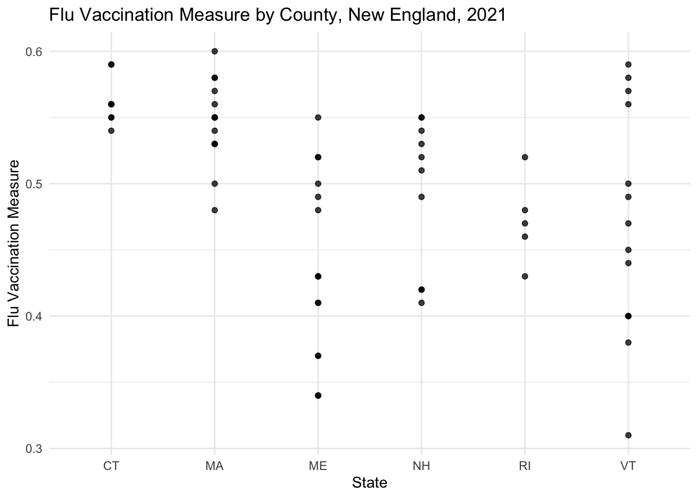
However, in this case, to be sure that every county is represented on the plot, a better option, would be to add jitter to the plot. jitter offsets the points from their original position slightly so that we can make out points that overlap.
Exercise 2: Add Jitter to the Plot
Copy the code that I created above into the chunk below. Refer to the ggplot2 cheatsheet to find the geom function you need to create this plot. Set the width and the height of the jitter to your choice. Notice the adjustments to the plot as you update these attributes.
# Paste the code below and adjust it
ggplot(data = ne_county_health_2021,
aes(x = State_Abbreviation,
y = Flu_vaccinations_raw_value)) +
geom_jitter(height = 0, width = 0.1)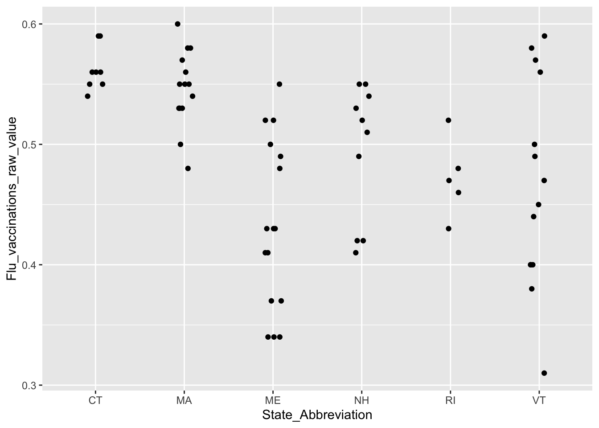
labs(title = "Flu Vaccination Measure by County, New England, 2021",
x = "State",
y = "Flu Vaccination Measure") +
theme_minimal()NULLReflection: Which New England states have counties with the highest flu vaccination rates? In which states are there greater disparities in vaccination rates across counties?
Answer:
Connecticut and Massachusetts have counties with the highest flu vaccination rates. There are greater disparities in the vaccination rates across counties within the states ME, NH, RI, and VT, with Vermont having the greatest disparity.
Graphics
Exercise 3: Recreate This Image Using the ggplot() Function
(Full size image in the images folder.)
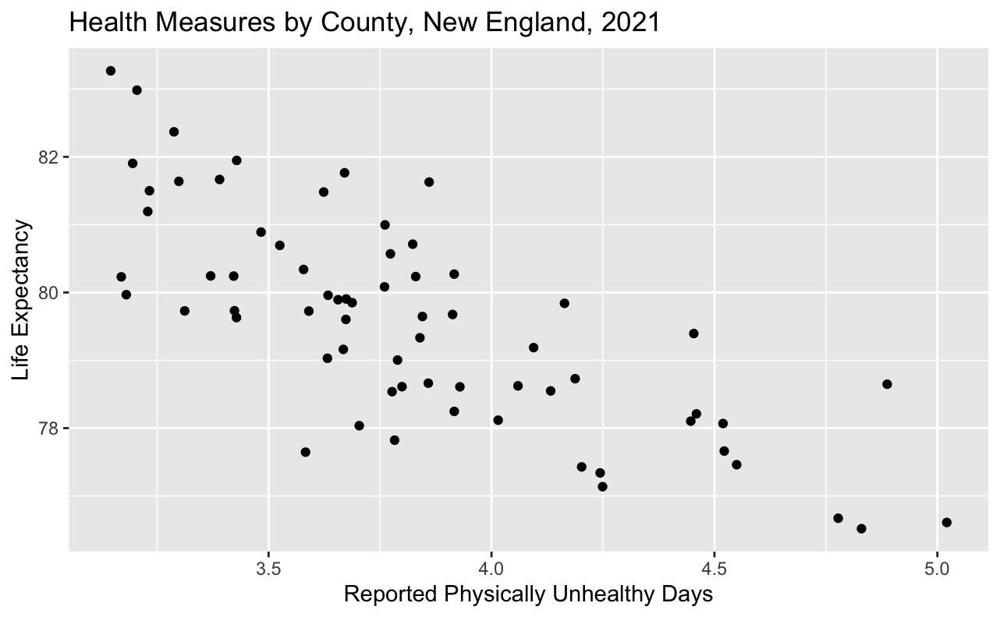
# Write your code below
ggplot(data = ne_county_health_2021,
aes(x = Poor_physical_health_days_raw_value,
y = Life_expectancy_raw_value)) +
geom_point()+
labs(title = "Health Measure by County, New England, 2021",
x = "Reported Physically Unhealthy Days",
y = "Life Expectancy") +
theme_minimal()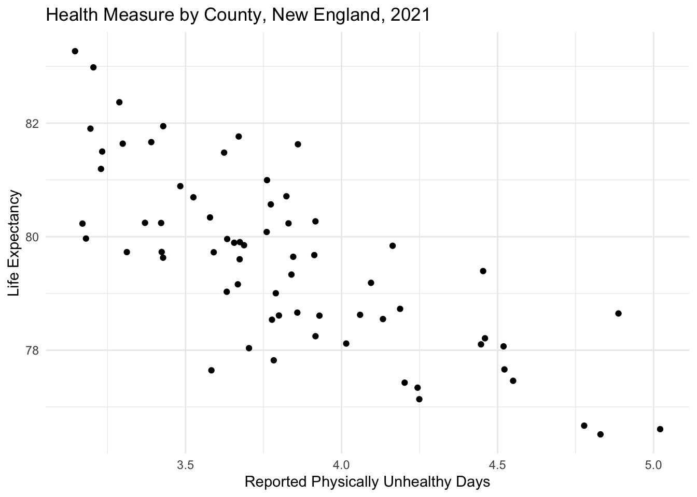
Exercise 4: Add a Subtitle to This Plot and to Set the Theme to Minimal to Balance the Data-to-ink Ratio
Your subtitle should be the data’s source: County Health Rankings, University of Wisconsin Population Health Institute
# Paste the code below and adjust it
ggplot(data = ne_county_health_2021,
aes(x = Poor_physical_health_days_raw_value,
y = Life_expectancy_raw_value)) +
geom_point()+
labs(title = "Health Measure by County, New England, 2021",
subtitle = "County Health Rankings, University of Wisconsin Population Health Institute",
x = "Reported Physically Unhealthy Days",
y = "Life Expectancy") +
theme_minimal()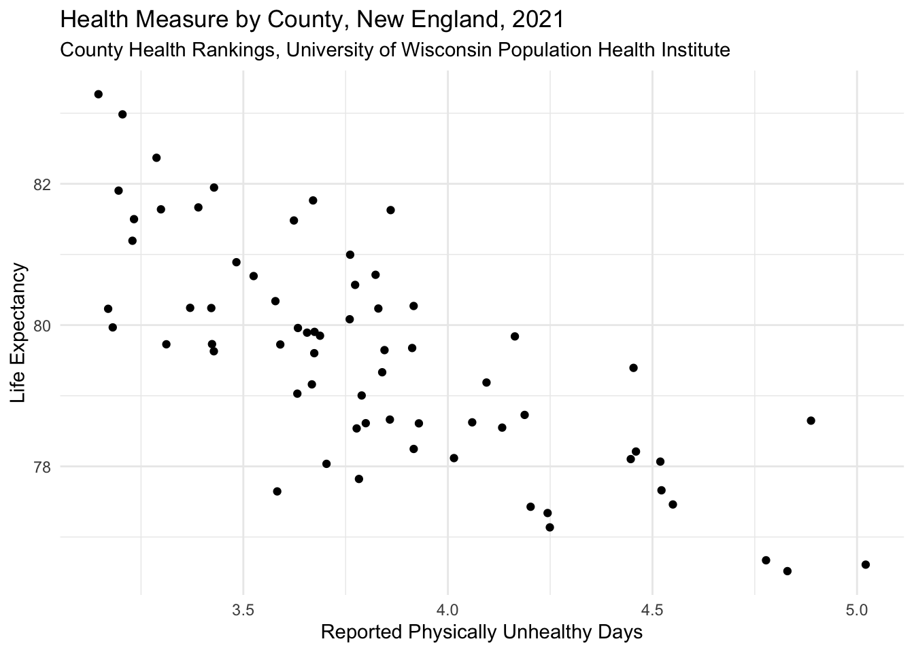
Exercise 5: Divide This Plot by State
Sometimes, the narrative a plot conveys can be misleading until we starting layering in additional variables. For instance, in the above plot we look at the correlation between life expectancy and reported physically unhealthy days in New England counties, but different states in New England might have different relationships between the two variables, so it may make more sense to divide this plot out by state. We can do this by creating small multiples using the facet_wrap() function.
# Paste the code you wrote in Exercise 4 below and adjust it
ggplot(data = ne_county_health_2021,
aes(x = Poor_physical_health_days_raw_value,
y = Life_expectancy_raw_value)) +
geom_point()+
labs(title = "Health Measure by County, New England, 2021",
subtitle = "County Health Rankings, University of Wisconsin Population Health Institute",
x = "Reported Physically Unhealthy Days",
y = "Life Expectancy") +
theme_minimal() +
facet_wrap(vars(State_Abbreviation))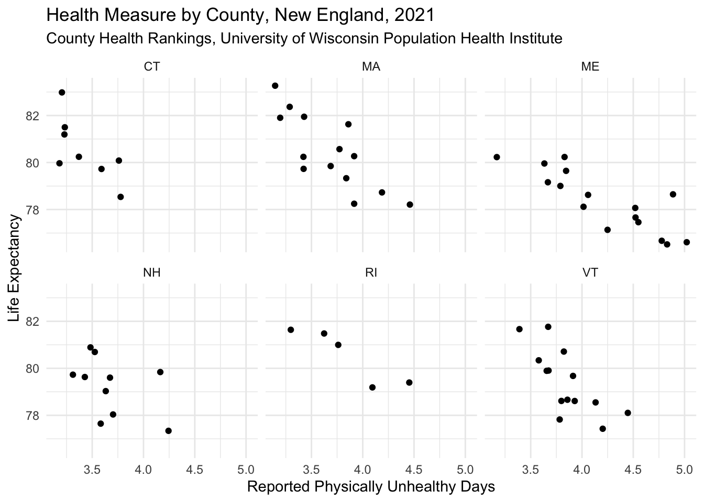
Visulization Asthetics
As we discussed in Lec 5, there are three types of color palettes that can be added to a plot:
- Sequential: A uni-directional ordering of shades.
- Diverging: A bi-directional ordering of shades.
- Qualitative: A discrete set of colors.
We’re going to use the RBrewer package to add appropriate palettes to these plots.
Exercise 6: Add a Sequential Color Aesthetic to Plot
- Map the median household income raw value to the color aesthetic in your
aes()function. Be sure to also change this argument in yourlabs()function to update your legend label. Then, append the following argument to the end of your plot:scale_color_distiller(palette = "Greens", labels = scales::comma) - Set the legend’s position to the bottom of the plot.
- The legend text may overlap. Use this argument
legend.text = element_text(size = 5)in yourtheme()function to adjust the size of the legend text.
# Paste the code you wrote in Exercise 4 below and adjust it
ggplot(data = ne_county_health_2021,
aes(x = Poor_physical_health_days_raw_value,
y = Life_expectancy_raw_value,
color = Median_household_income_raw_value)) +
geom_point()+
labs(title = "Health Measure by County, New England, 2021",
subtitle = "County Health Rankings, University of Wisconsin Population Health Institute",
color = "Median Household Income",
x = "Reported Physically Unhealthy Days",
y = "Life Expectancy") +
theme(legend.position = "bottom", legend.text = element_text(size = 5))+
scale_color_distiller(palette = "Greens", labels = scales::comma)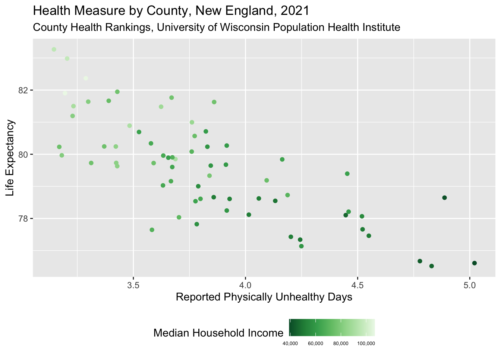
Why do we use a sequential pattern here instead of a divergent pattern? Because Median Household Income is a continuous variable that starts at 0 and increases in one direction. There’s not a middle or neutral value that we are comparing incomes around. We should only use diverging color palettes in cases when we are comparing distances in two directions from some middle point. For instance, maybe I would use a diverging palette to visualize temperatures above or below freezing.
Exercise 7: Add a Qualitative Color Aesthetic to Plot
Copy and paste the plot we created above into the chunk below. Instead of coloring the points by median household income, color them by state. Be sure to update your legend title. Finally, convert the sequential palette into a categorical palette. To determine how to do this, direct your attention to the Color and Fill Scales section of the ggplot2 cheatsheet. How should the word “distiller” be edited in this function call in order to create a palette with a discrete set of colors? Once you determine this, update the function call and the palette to “Set2”.
You need to delete labels = scales::comma in your scale_color_*() function. You can delete legend.text = element_text(size = 5) in your theme() function.
Hint: You don’t need to change the word “color” to “fill” when adjusting the scale function name. We apply the color argument to points and lines, and the fill argument to bars and shapes. This is a point plot, so we will stick with color!
# Paste the code you wrote in Exercise 6 below and adjust it
ggplot(data = ne_county_health_2021,
aes(x = Poor_physical_health_days_raw_value,
y = Life_expectancy_raw_value,
color = State_Abbreviation)) +
geom_point()+
labs(title = "Health Measure by County, New England, 2021",
subtitle = "County Health Rankings, University of Wisconsin Population Health Institute",
color = "State",
x = "Reported Physically Unhealthy Days",
y = "Life Expectancy") +
theme(legend.position = "bottom")+
scale_fill_brewer(palette = "Set2")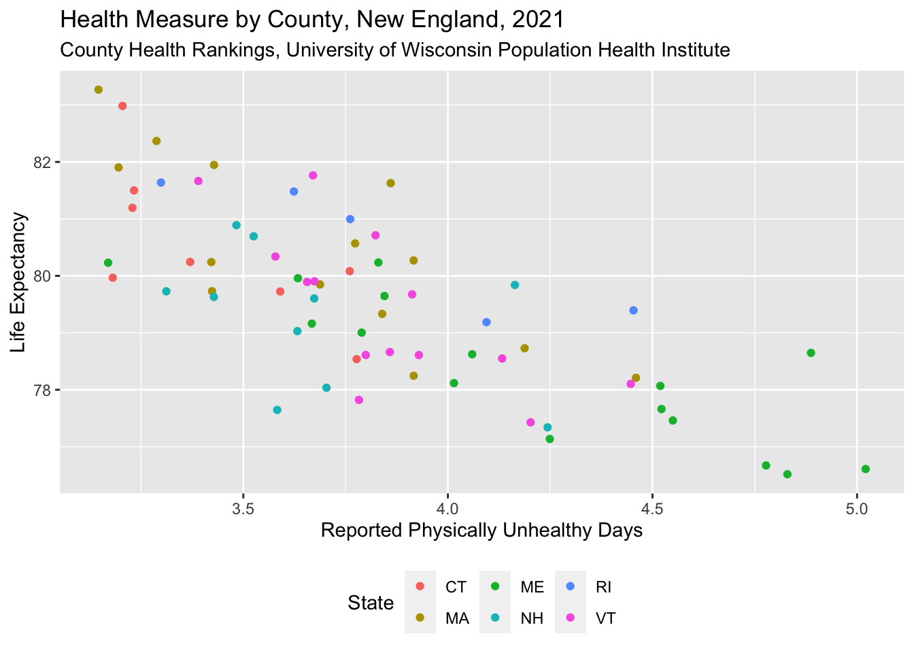
Reflection: Which states tend to have higher life expectancy and fewer reported physically unhealthy days? Which states tend to have lower life expectancy and more reported physically unhealthy days?
Answer:
ME has the lower life expectancy, while MA and CT has the higher life expectancy.
Exercise 8: Add a Size Aesthetic to Plot
Reference the ggplot2 cheatsheet to adjust the following plot in these ways:
- Map the median household income raw value to the size aesthetic.
- Change the label for the size legend to Median Household Income (hint: you will supply the name of the aesthetic argument in the
labs()function). - Change
scale_color_distiller(palette = "Greens", labels = scales::comma)toscale_size_continuous(labels = scales::comma).
# Paste the code you wrote in Exercise 6 below and adjust it
ggplot(data = ne_county_health_2021,
aes(x = Poor_physical_health_days_raw_value,
y = Life_expectancy_raw_value,
size = Median_household_income_raw_value)) +
geom_point()+
labs(title = "Health Measure by County, New England, 2021",
subtitle = "County Health Rankings, University of Wisconsin Population Health Institute",
size = "Median Household Income",
x = "Reported Physically Unhealthy Days",
y = "Life Expectancy") +
theme(legend.position = "bottom", legend.text = element_text(size = 5))+
scale_size_continuous(labels = scales::comma)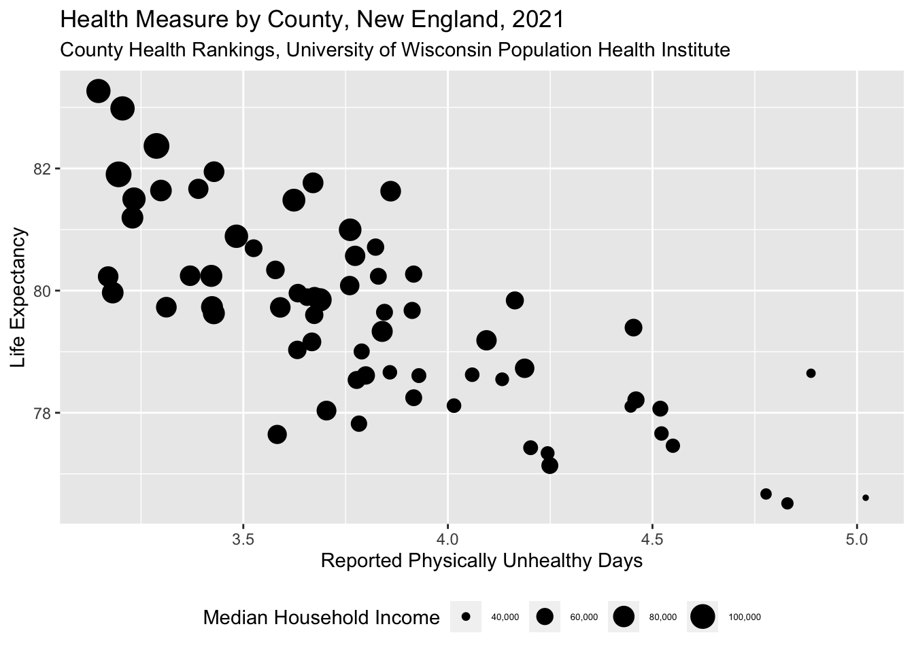
Reflection: What does this plot tell us that we couldn’t see if we only considered the variables on the x and y axis?
Answer: The comparison of the median household income relative to life expectancy and reported physically unhealthy days.
Exercise 9: Map a Shape Aesthetic to Plot
A different way to differentiate data on a plot is to map the shape aesthetic onto the plot. In this case, rather than all observations in the dataset appearing as points on a plot, observations will appear as different shapes based on their associated values in a categorical variable.
Copy the code that you wrote in Exercise 7 into the chunk below. Instead of the color aesthetic, assign the shape of the data on the plot by setting shape = to a categorical variable of your choice (hint: a categorical variable is a qualitative variable such as state abbreviation. We talked about types of variables in Lec 5). With the caveat that the shape palette can deal with a maximum of 6 discrete values because more than 6 becomes difficult to discriminate. Remember that, in this case, shape is an aesthetic, so this must be added inside of the aes() function. Add a label for the legend by setting shape = in the labs() function to a phrase that describes the shape variable. Remove the scale_color_*() function.
# Paste the code you wrote in Exercise 7 below and adjust it
ggplot(data = ne_county_health_2021,
aes(x = Poor_physical_health_days_raw_value,
y = Life_expectancy_raw_value,
shape = State_Abbreviation)) +
geom_point()+
labs(title = "Health Measure by County, New England, 2021",
subtitle = "County Health Rankings, University of Wisconsin Population Health Institute",
shape = "State",
x = "Reported Physically Unhealthy Days",
y = "Life Expectancy") +
theme(legend.position = "bottom")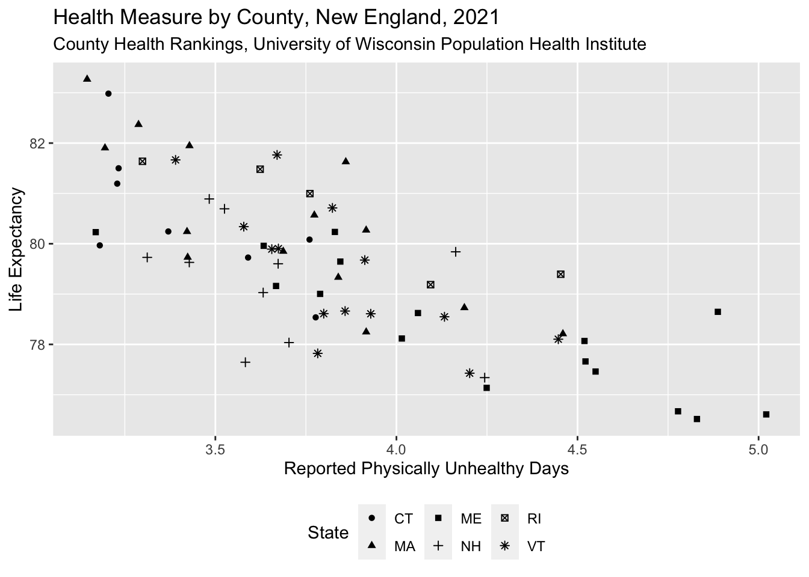
Exercise 10: Adjust the Scale and Position of Plot
When we map a variable onto an aesthetic, we are only indicating that the variable should be mapped. We are not indicating how the variable should be mapped. In order to indicate how we want a variable mapped to an aesthetic, we can adjust its scales. Scales are adjusted by tacking the following onto a ggplot() object: + scale_*_<type>(). For instance, let’s say that I wanted to adjust the scale of my x-axis to a log scale. I would attach + scale_x_log10() to my ggplot() object.
We can adjust the scale of our x and y-axes by adding + scale_x_<type>() or + scale_y_<type>() to our plots. Note what happens when we attempt to create a scatterplot that shows the relationship between all the counties in the US and the HIV prevalence measure. Run the code below to see an example of this.
ggplot(data = county_health_2021,
aes(x = State_FIPS_Code,
y = HIV_prevalence_raw_value)) +
geom_point() +
scale_y_continuous() +
labs(title = "Health Measures in the US, 2021",
x = "State Code",
y = "HIV Prevalence Measure") +
theme_minimal()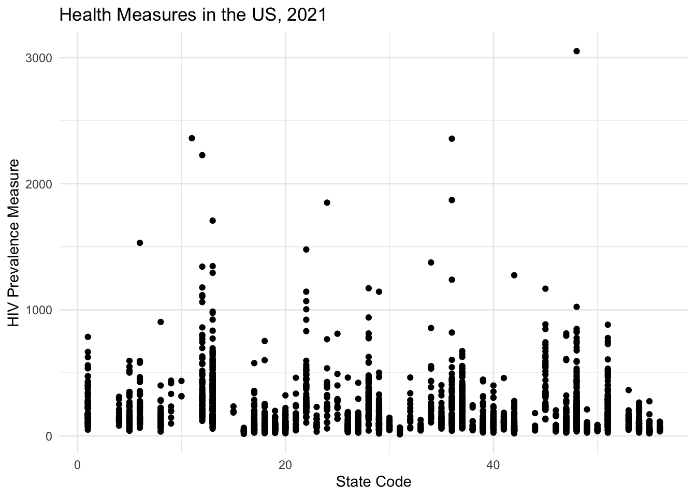
Even if we adjust the alpha and size of points on the plot as we did in Exercise 1, as well as use another method to add jitter to the plot, which is to set position = "jitter" in the geom_point() function (Reference the ggplot2 cheatsheet to learn more about Position Adjustments), the plot is still difficult to interpret. Run the code below to see an example of this.
ggplot(data = county_health_2021,
aes(x = State_FIPS_Code,
y = HIV_prevalence_raw_value)) +
geom_point(alpha = 0.75,
size = 0.5,
position = "jitter") +
scale_y_continuous() +
labs(title = "Health Measures in the US, 2021",
x = "State Code",
y = "HIV Prevalence Measure") +
theme_minimal()Due to most states have fewer than 1,000 people newly diagnosed with HIV in 2021, the vast majority of the points on the plot appear at the bottom of the y-axis scale and are indiscernible from one another. This is a case when it makes sense to apply a log scale to the y-axis.
Copy the plot that I created above, and change the y-axis scale from continuous to log10. You might reference the formula specified above or reference the ggplot2 cheatsheet for help.
# Paste the code below and adjust it
ggplot(data = county_health_2021,
aes(x = State_FIPS_Code,
y = HIV_prevalence_raw_value)) + scale_y_log10()+
geom_point(alpha = 0.75,
size = 0.5,
position = "jitter") +
scale_y_continuous() +
labs(title = "Health Measures in the US, 2021",
x = "State Code",
y = "HIV Prevalence Measure") +
theme_minimal()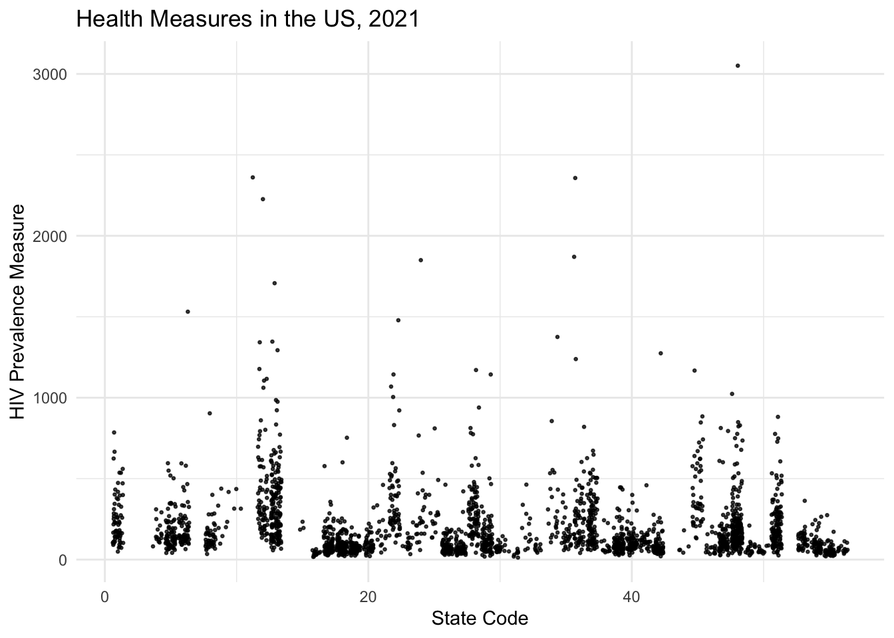
Sometimes I might wish to group certain numerical values into bins on a plot. For instance, let’s say I just want to see how many states are more HIV prevalent in comparison to states that are less HIV prevalent. So I want to group the numerical values in HIV_prevalence_raw_value into two bins: 0-1000 and 1000-3000. To do this, I will set the scale to: + scale_y_binned() and add an argument to establish the bin breaks: breaks = c(1000, 3000) as well as an argument to label the bin breaks: labels = c("HIV Less Prevalent", "HIV More Prevalent"). Check out what happens to the y-axis scale when I do this below.
ggplot(data = county_health_2021,
aes(x = State_FIPS_Code,
y = HIV_prevalence_raw_value)) +
geom_point(alpha = 0.75,
size = 0.5,
position = "jitter") +
scale_y_binned(breaks = c(1000, 3000),
labels = c("HIV Less Prevalent", "HIV More Prevalent")) +
labs(title = "Health Measures in the US, 2021",
x = "State Code",
y = "HIV Prevalence Measure") +
theme_minimal()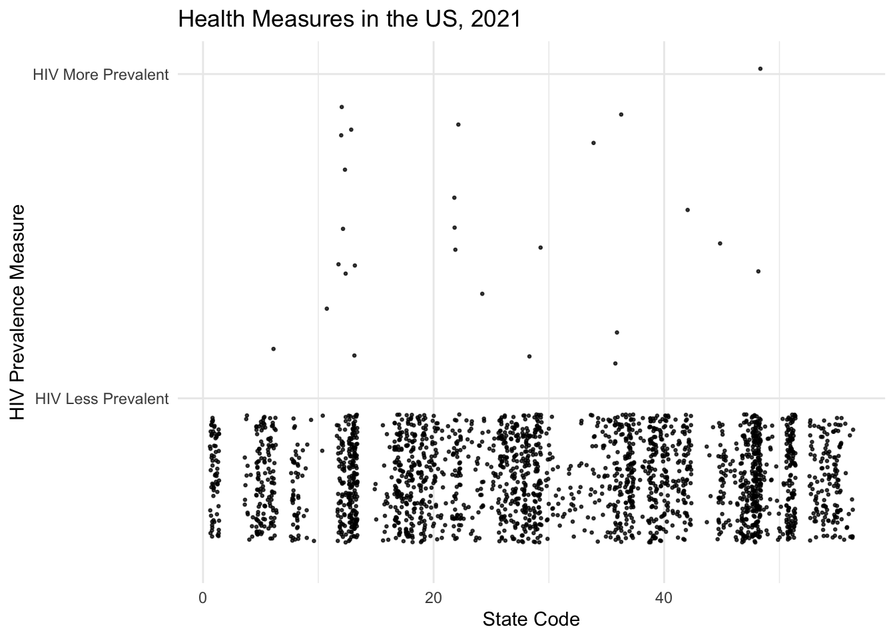
This is just an exploratory data analysis. I was wondering if there is a relationship between population and HIV prevalence measure. I want to ask you to help explore this. You may need to adjust the x-axis scale of the plot. Specifically, you need to group the numerical values Population_raw_value into two bins of your choice. Just explore! Set appropriate labels for the two bins you choose.
# Paste the code below and adjust it
ggplot(data = county_health_2021,
aes(x = Population_raw_value,
y = HIV_prevalence_raw_value)) +
geom_point(alpha = 0.75,
size = 0.5,
position = "jitter") +
scale_y_binned(breaks = c(1000, 3000),
labels = c("Population Less Prevalent", "Population More Prevalent")) +
labs(title = "Health Measures in the US, 2021",
x = "Population",
y = "HIV Prevalence Measure") +
theme_minimal()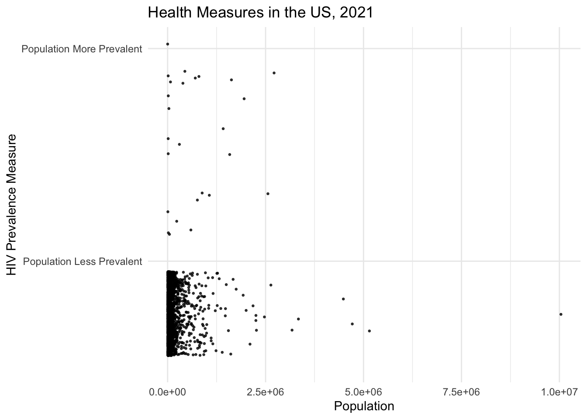
Exercise 11: Weekly Reflections
Fill out this week’s reflections Google form to receive credit.
No Google Form!